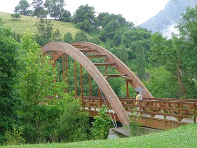
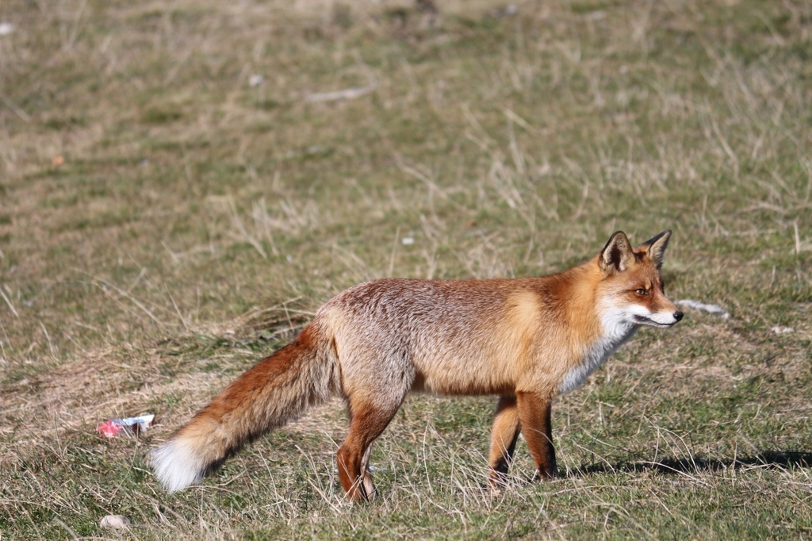

PUNTOS DEL RECORRIDO
Lugares que descubrirás durante la ruta
EL RECORRIDO
Empezamos la ruta en el Ayuntamiento, dirigiéndonos por la N-629 hasta el cruce con la carretera de Arredondo (CA-261) que tomaremos a la izquierda, seguidamente giramos a la derecha por la calle estrecha que pasa detrás de la casa amarilla.
A partir de ahí, continuamos por una senda peatonal, cruzaremos un puente de madera que nos llevará a rodear una zona con varias instalaciones deportivas y zonas ajardinadas.
Regresando de nuevo al puente volveremos por el mismo camino hasta la carretera general donde cogemos, de frente, por la calle Manuel González Peral para finalizar el recorrido en el punto de inicio.
BOSQUE VIVO
EN CADA ESTACIÓN
El Paseo de Cubillas cambia de rostro con las estaciones: los ocres del otoño, el bosque desnudo del invierno, el verdor de la primavera y los frutos del verano.
BOSQUE DE RIBERA Y ROBLEDAL
El principal atractivo de este recorrido es su bosque de ribera, que acompaña al río formando una característica disposición en galería. Alisos, sauces, fresnos, plátanos, olmos y avellanos se mezclan con arbustos como el cornejo, el rosal silvestre, la zarzaparrilla y el espino albar.
Junto al bosque de ribera encontramos un pequeño robledal con hermosos ejemplares de roble. Bajo sus copas crece un sotobosque formado por hiedras, zarzamoras y nueza negra, que ofrece alimento y cobijo a la fauna.

UN BOSQUE LLENO DE VIDA

Si activamos nuestros sentidos, descubriremos que este bosque está lleno de vida. Algunos animales podremos observarlos directamente, otros se harán notar con sus sonidos y, en muchas ocasiones, solo encontraremos sus huellas y rastros.
Junto al río podemos encontrar el ánade real, el mirlo acuático, el martín pescador, la lavandera y la garza real. Bajo el agua viven la trucha y el salmón, además de reptiles y pequeños mamíferos. Entre los robles habitan arrendajos, carboneros, herrerillos, trepadores, pájaros carpinteros, zorros, ginetas, ardillas y ratones de campo.

El pato más común del río. El macho luce una inconfundible cabeza verde metálica en la época de celo.

Ave singular que camina bajo el agua para buscar invertebrados en el lecho del río.

Pequeño, veloz y de colores brillantes. Se lanza en picado sobre el agua para capturar peces.

Pez emblemático del río Asón y bioindicador de la calidad del agua. Indicador de aguas limpias y bien oxigenadas.

Omnívoro y adaptable, habita tanto el bosque como los márgenes del río. De hábitos principalmente crepusculares.
INFORMACIÓN ÚTIL
 Zona Picnic
Zona Picnic Parque infantil
Parque infantil Apta para niños
Apta para niños Calzada compartida
Calzada compartida Apta para bicicletas
Apta para bicicletas Recurso hídrico
Recurso hídrico Restaurante
Restaurante Apta para carritos
Apta para carritos¿LISTO PARA CAMINAR?
SEGUIR LA RUTA →